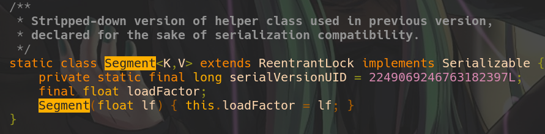

Demystify Concurrent Hash Map
Do you know how ConcurrentHashMap works? If you think that it uses list of Segments in order to provide ReadWriteLock for each element in NodeEntry array then you are welcome to read this post about ConcurrentHashMap internals.
Lies about CHM
I read a lot of articles and I thought that my knowledge about ConcurrentHashMap(CHM) is right. CHM has an array of Nodes which stores each key,value pairs and CHM has array of segments which is used in order to provide a lock for every element of node array. After that I checked the source code of Java 11 and I was surprised. This is how Segment class looks like.
The comment above says Used in previous version. This class is not used in jdk 1.8 and
above because the algorithm was rewritten. There are a lot of blog posts in internet which still
explain CHM using Segments.
For example this blog
from 2018 says
So any write operation(remove/put/clear etc) will work in 3 steps:
1. Wait until it gets the lock on that Segment.
2. Do the operation.
3. Release the lock after it.
While this blog from 2019 says
HashMap it does not apply the same lock on each method it uses a separate lock for each method,
It uses re-entrant lock for this purpose. Similar to HashMap, ConcurrentHashMap has 16 buckets i.e
segments, to create ConcurrentHashMap with more than 16 buckets it has different constructors.
Both blogs describe how it used to work in jdk7. That is why we should check the source code and see what is really hidden behind this powerful data structure.
Reads
I want to start explanation with documentation about reads
* Retrieval operations (including {@code get}) generally do not
* block, so may overlap with update operations (including {@code put}
* and {@code remove}). Retrievals reflect the results of the most
* recently completed update operations holding upon their
* onset. (More formally, an update operation for a given key bears a
* happens-before relation with any (non-null) retrieval for
* that key reporting the updated value.) For aggregate operations
In essence, it says that writes don't block reads(reads are non-blocking) and reads see results of
the most recently write using happens-before guarantee(if you don't know what it means than I would
recommend you
to check out this
wonderful
presentation about it).
How reads could see the most recent write? Using volatile read. However, as you remember all key
value pairs are stored in Node array and there is no way to read element of the array atomically.
This is how NodeArray is declared in CHM source codetransient volatile
Node<K,V<[] table;.
Volatile array means that you could atomically assign new reference to the array but you can't read
each element atomically. However, Java has
a special class called Unsafe
which provides a JNI interface to make atomic reads from any array. With this in mind let's write a
pseudocode for the read method.
public V get(Object key) {
//atomically reads element of the array with given hash using Unsafe
if ((node = volatileGetNode(getBucketIndex(hash(key)))) != null) {
// check first node
if (isKeyEquals(key, hash, node)) {
return node.value;
}
// walk through the rest to find target node because if there are multiple keys with the same hashcode then CHM uses LinkedList
while ((node = node.next) != null) {
if (isKeyEquals(key, hash, node))
return node.value;
}
}
As you can see get method doesn't use any locks.
Writes
Now let's take a look at insertion documentation
Insertion (via put or its variants) of the first node in an
* empty bin is performed by just CASing it to the bin. This is
* by far the most common case for put operations under most
* key/hash distributions. Other update operations (insert,
* delete, and replace) require locks. We do not want to waste
* the space required to associate a distinct lock object with
* each bin, so instead use the first node of a bin list itself as
* a lock. Locking support for these locks relies on builtin
* "synchronized" monitors.
It shows us the reason why Segments array was removed from jdk1.8+. CHM now uses first node of the
NodeEntry array as a lock object in order to save a space that were occupied by array of Segments.
Apart from it, documentation says that if node will be inserted into the empty bin
(Empty bin means there are no other nodes in the array with the same hashcode) then the node will
be inserted in
lock free way using Compare-And-Swap(CAS).Let's look at the pseudocode of the put method borrowed
from habr.
public V put(K key, V value) {
Node<K, V> node;
while (true) {
// if bucket is empty try to set new head with cas
if(node = volatileGetNode(bucketIndex)) == null) {
//if we succeeded to create a new bin then just stop the while loop
if (compareAndSwapNode(bucketIndex, new Node<>(key,value)))
break;
//otherwise another thread inserted a bin at the same time,
// in this case the node is already initialized(condition above that checks for null will fail)
// and we can acquire a lock on it
} else{
//get a lock and just insert new one as the last element of LinkedList
synchronized (node) {
Node nextNode = node;
while(next.next != null){
nextNode = nextNode.next;
}
nextNode.next = new Node(key,value);
}
}
}
So when two threads tries to insert nodes with the same hashcodes at empty bin, only one of them will succeed and the second one will acquire a lock on a newly created node in order to insert a second node into the end of the Linkedlist.
Lambda methods
In addition to get and put , CHM has a lot of methods that accept a lambda as an argument such
as computeIfAbsent,computeIfPresent,merge. All those methods are thread safe.
I would like to mention method merge which is really elegant and not everyone know about it.
I firstly found this method when I tried to solve this problem from leetcode.
Let's say you have a line of words separated by white spaces. You want to count how many times each
word is presented
in this line ,that is why you will use a map where key is word and
value is an integer that shows how many times this word was repeated in this line. The code below
shows
you non thread safe version of the solution
void count(String line){
ConcurrentHashMap<String,Integer> counts = new CHM();
for(String word : line.split(" "){
count.putIfAbsent(word,1);
count.computeIfPresent(word,(k,v)->v+1);
}
This code is not thread safe because it uses two atomic operations in separate. In order to protect
this code from threads intervention , method has to be declared as synchonized.
However , there is more elegant way to replace two method calls with one using merge.
This is how the same code looks like using mergecount.merge(word,1,Integer::sum). Merge
takes 3
parameters.
First one is key, second one is value and third parameter is lambda which will be used if given key
value
pair already exists in Map, otherwise method will work as a simple put. In our case, it will simply
add 1 to the value if word already exists.
Other mysteries
Apart from get and put CHM does a great job to :
- Lazily initialize NodeEntry array
- Resize NodeEntry array
- Replace LinkedList with RedBlackTree if amount of nodes with the same hashcode is bigger than threshold
Finally there is another ConcurrentMap implementation in standard jdk called ConcurrentSkipList which uses SkipList data structure under the hood. I will cover internals soon in a separate blog post.